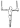

| Начальный |
Базовые
навыки |
1 |
|
|
|
|
Jumping Pullups |
|
|
|
Упраж-нения co значком

|
| 2 |
|
|
|
Ring Rows |
Bar Pullup Ecce. |
|
Assisted Pullups |
Kip Pullups |
| 3 |
Tuck BL |
|
|
Wide Ring Rows |
Bar Pullups |
|
Собст-венный вес |
Bar Pullups |
| 4 |
Adv. Tuck BL |
Tuck FL |
|
|
L-pullups |
R L-Pullups |
+17.5% СВ |
Kip Clap Pullups |
| Уровень A |
5 |
Straddle BL |
Adv. Tuck FL |
Tuck FL Pull |
Archer Ring Rows |
Pullover |
R Wide Pullups |
+35% СВ |
Non-Kip Clapping |
| Средний |
6 |
½ Lay / 1 Leg BL |
Straddle FL |
Adv. Tuck FL Pull |
Str One Arm Rows |
|
R Wide L-pullups |
+50% СВ |
L-clapping Pullups |
| 7 |
Full BL |
½ Lay / 1 Leg FL |
Adv. Tuck RC |
One Arm Rows |
|
R Archer Pullups |
+65% СВ |
Kip BTB Clap |
| 8 |
BL Pullout |
Full FL |
Straddle FL Pull |
|
|
OAC eccentric |
+77.5% СВ |
L-slap Abs |
| Уровень B |
9 |
GH Pullout |
FL to Inverted |
Str FL RC |
|
|
OAC |
+90% СВ |
L-slap Thighs |
Cross progressions |
| Продвинутый |
10 |
BA pullup BL |
Hang Pull to Inv. |
Full FL Pull |
|
|
OAC + 4.5 kg |
+100% СВ |
Regular Slap Thighs |
Hold Iron Cross |
| 11 |
HS lower to BL |
Circle Fls |
Full FL RC |
|
|
OAC + 9 kg |
+110% СВ |
Non-kip BTB Clap |
Cross to Back Lever |
| 12 |
|
|
|
|
|
|
|
|
|
| Уровень C |
13 |
|
|
|
|
|
|
|
|
Iron Cross pullouts |
| Элитный |
14 |
|
|
|
|
|
|
|
|
Hang pull to Back Lever |
| 15 |
|
|
|
|
|
|
|
|
Butterfly mount |
| 16 |
|
|
|
|
|
|
|
|
Support to hang to cross |